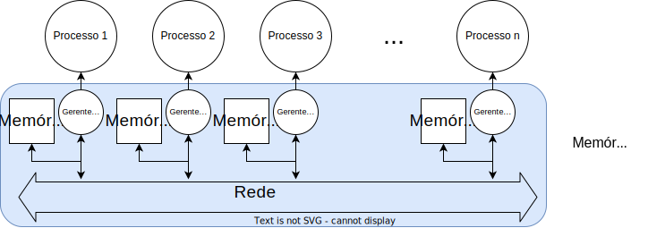

Modelos
Dado a quantidade de ambientes reais em que as soluções dos nossos problemas abstratos precisam executar, com sua diversidade de sistemas operacionais, latências de rede, tamanhos de mensagens, etc, seria praticamente impossível provar alguma coisa geral e interessante sobre os algoritmos, como por exemplo se ele funciona. Por isso, em vez de considerar cada ambiente específico, abstraímos os ambientes por meio de modelos computacionais, que capturam as premissas gerais dos ambientes, e só então escrevemos os algoritmos para tais modelos.
Isso que dizer que, na prática, antes de distribuir a computação/armazenamento em diversas máquinas e de forma a coordenar ações das diversas partes de forma a entregar o serviço de acordo com expectativas dos usuários, precisamos responder a algumas perguntas, como por exemplo:
- Qual a probabilidade de um nó parar de funcionar?
- Como os nós se comunicam? Eles compartilham um espaço de endereçamento ou enviam mensagens uns para os outros?
- A quais atrasos a comunicação está sujeita? Pode haver atrasos infinitos?
- A comunicação pode ser corrompida?
- Os relógios dos hospedeiros marcam o mesmo valor no mesmo instante, ou melhor, são sincronizados?
- Há agentes que possam querer perturbar o sistema, por exemplo para ganhar acesso a mais recursos do que seria justo?
Modelos
- Comunicação
- Sincronismo
- Falhas
Estas perguntas são normalmente divididas em três eixos, Comunicação, Sincronismo e Falhas, e a combinação das respostas define o modelo computacional adotado.
Comunicação
De uma forma ou de outra, sistemas distribuídos tem à sua disposição múltiplos processadores e permitem o desenvolvimento de aplicações paralelas, isto é, onde múltiplas tarefas são executadas ao mesmo tempo ou paralelamente. Contudo, por um lado, quando falamos em sistemas multiprocessados, normalmente estamos falando de sistemas em que os processadores estão próximos e compartilham um mesmo espaço de endereçamento, sejam computadores com múltiplos processadores ou sejam clusters de computadores conectados por um barramento de comunicação de altíssima largura de banda, como Infiniband que abstraiam múltiplos segmentos de memória como um único espaço de endereçamento. Seja como for, estes sistemas com memória compartilhada são normalmente usados para aplicações de computação intensiva e em cujo os componentes são mais fortemente acoplados e melhor estudados em um curso de computação paralela.

Comunicação
- memória compartilhada
- troca de mensagens
Por outro lado, estamos mais interessados aqui em sistemas de maior escala geográfica, o que se adequa melhor ao modelo de troca de mensagens, isto é, onde cada nó mantem controle total do seu espaço de endereçamento e só expõe seu estado via mensagens enviadas para os outros nós. Este modelo é mais adequado ao desenvolvimento de aplicações com componentes fracamente acoplados, em que atrasos de comunicação e ocorrência de falhas independentes são intrínsecas.

Memória Compartilhada Distribuída (DSM, do inglês, Distributed Shared Memory) é uma abordagem híbrida que tenta integrar a facilidade de se programar usando um único espaço de endereçamento mas com o nível de distribuição necessária a aplicações de larga escala, inclusive geográfica.

Considere uma possível implementação em software da DSM, apresentada na próxima figura. Nesta abordagem, cada host contribui uma porção de sua memória para um pool global. Processos acessam o pool via gerentes de memória, que traduzem os endereços de um espaço de endereçamento virtual para um host e um endereço local a tal host, e usam message passing para implementar o acesso. Esta abordagem resulta em uma arquitetura NUMA, isto é, Non-Uniform Memory Access, já que os acessos a endereços locais são mais rápidos que aos remotos.

O modelo de comunicação usado no problema dos 3 exércitos é claramente de passagem de mensagens.
Sincronismo
Sincronismo
- operações
- comunicação
- relógio
- sincronização
Quanto ao sincronismo, considera-se se os processos tem a capacidade de medir a passagem de tempo, isto é, se tem a acesso a relógios, o quão acurazes este são e o quão sincronizados são estes relógios uns com os outros.
No problema dos três exércitos, podemos considerar que amos os atacantes tinha acesso a um relógio perfeitamente sincronizado, bastando olhar para o céu para ver o horário. Claramente enquanto variações na ordem de vários minutos ou até mesmo uma hora na leitura de um relógio solar não teriam grande impacto na vida dos exércitos, alguns sistemas computacionais podem exigir que os relógios de seus componentes não distem mais que alguns milissegundos. Revisitaremos este tópico em uma seção específica sobre Tempo.
Além do acesso a relógios, considera-se no modelo de sincronismo a existência ou não de limites de tempo para execução de operações, por exemplo, quanto tempo um processador leva para executar uma operação de soma de dois inteiros, ou quanto tempo é necessário para a entrega de uma mensagem enviada na rede.
Falhas
Quanto às falhas, primeiro é preciso aceitar o fato de que componentes independentes podem falhar independentemente e que quanto mais hosts, maior é a probabilidade de que pelo menos um deles tenha uma CPU, disco, fonte, ou que quer que seja, apresentando problemas; e estejam certos, problemas acontecem o tempo todo.1 Isto é importante pois se em sistemas monolíticos uma falha pode facilmente fazer com que o sistema todo pare e, portanto, não tente progredir na ausência de um componente essencial, em um sistema distribuído queremos exatamente o contrário, isto é, que apesar da falha de um componente, os outros continuem prestando o serviço, mesmo de forma deteriorada, mas sem comprometer a corretude do sistema.
Falhas
- detectável
- temporização
- quebras
- maliciosas
- perda e corrupção de mensagens
Para lidar com falhas, precisamos entender quais são suas possíveis formas, isto é, se o levam componentes falhos a parar de funcionar totalmente e de forma identificável por outros ou não, se há falhas "maliciosas", se os limites de tempo estabelecidos acima podem ser violados, se mensagens podem ser perdidas ou corrompidas. Revisitaremos este tópico na sessão Tolerância a Faltas.
Modelo Assumido
Outros
- carga de trabalho
Embora modelos clássicos sejam normalmente definidos em termos dos fatores acima, outras questões são também importantes, como o padrão da carga de trabalho do sistema (maior carga à noite? Na hora do almoço? Black friday?). Além de ignorarmos estes outros fatores, por enquanto assumiremos um modelo computacional amigável, com comunicação por troca de mensagens, relógios e limites de tempo para operações, mesmo que desconhecidos. Também assumiremos ausência de falhas, a não ser quando quisermos provocar a análise de situações mais interessantes. Este modelo será ajustado na medida em que avançarmos, para tornar nossas análises mais realistas.
SD são como cebolas!
Uma vez definido o modelo computacional e identificado os algoritmos adequados aos problemas que queremos resolver, passamos à implementação. Distribuir é dividir a computação/armazenamento em diversos componentes, possivelmente geograficamente distantes, e coordenar suas ações para que resolvam a tarefa em questão de forma correta. Com a distribuição objetiva-se usar recursos disponíveis nos hosts onde os componentes são executados2 e usar de redundância para garantir que o serviço sofra degradação graciosa em caso de falhas, ou seja, fazer com que o serviço continue funcionando, mesmo que com vazão reduzida, latência aumentada, menor capacidade de tratamento de requisições concorrentes, ou com funcionalidades desabilitadas.
Abstrações
- Comunicação
- Ordenação
- Confiabilidade
- Invocação de procedimentos remotos
- Heterogeneidade
- Linguagens
- Arquiteturas
- Sistemas Operacionais
- Times
Para colaborar, as diversas partes do sistema distribuído devem se comunicar, o que pode pode ser feito de diversas formas e em diversos níveis de abstração. Por exemplo, no caso troca de mensagens, estas podem ser desde pacotes de bytes entregues pelo IP/UDP como por troca de mensagens ordenadas, fluxos de dados, ou invocação remota de procedimentos. Implementar estas abstrações em si já é uma tarefa complicada, pois é preciso levar em consideração que os componentes de um sistema distribuído falham independentemente, executam em hosts com relógios dessincronizados, são desenvolvidos usando-se linguagens diversas, sistemas operacionais distintos, com arquiteturas diferentes e por times independentes.
Apesar de tantas variáveis, as abstrações precisam permitir que as aplicações que as usem possam se coordenar nos mínimos detalhes. Dado que a complexidade de se implementar estas abstrações já é grande por si só, se formos reinventar a roda a cada novo sistema, não faremos muitos avanços. Mas, como vocês bem sabem, camadas de abstração são a chave para se lidar com complexidade. Assim, sistemas distribuídos são como cebolas, cheias de camadas e que nos fazem chorar quando precisamos descascá-las.3 Felizmente, para cada problema que tenha que resolver, há uma boa probabilidade de que alguém já o tenha atacado e disponibilizado uma solução, de forma comercial ou não.
-
Os recursos compartilhados vão desde alguns óbvios, como capacidade de armazenamento e de processamento, a própria localização de um nó, que pode ser geograficamente mais próxima e de menor latência até um ponto de interesse, ou até mesmo a disponibilidade de uma conexão física com um recurso especial, como uma impressora. ↩
-
Lembrem-se que também
 e você não quer que seu sistema seja como ogros, temperamentais e mal-cheirosos. Logo, planeje bem suas camadas de abstração. ↩
e você não quer que seu sistema seja como ogros, temperamentais e mal-cheirosos. Logo, planeje bem suas camadas de abstração. ↩